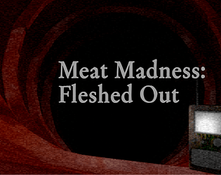
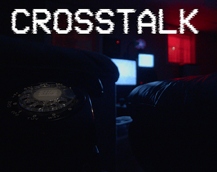
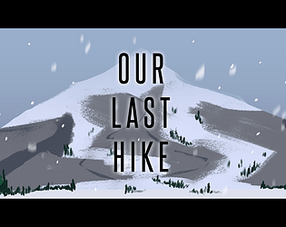
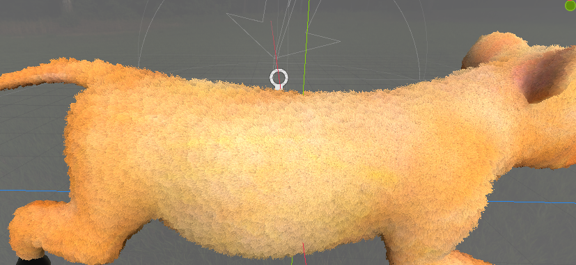
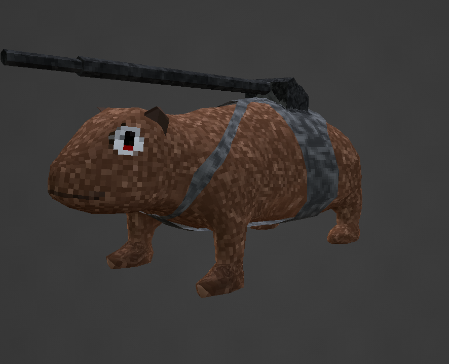

| Email: | sjkillen@ualberta.ca |
| Discord: | sjkillen |
| Matrix: | @mm__:matrix.org |
| ORCID: | 0000-0003-3930-5525 |
| Publications: | DBLP |
| Github: | sjkillen |
| Forgejo: | sjkillen |
|  | Meat Madness | A low-poly horror platformer that has you uncovering a dark narrative of a corporation's mining operation on a planet made of meat. |
|  | Crosstalk | This cryptic horror puzzle game combines high definition video and photography to create unique visuals while decoding incoming television signals. |
|  | Our Last Hike | This game, which placed first in C-Tribe's 2024 Winter game jam, slowly guides the player up a massive mountain to spread the ashes of their deceased father. The player is challenged with a slow and arduous journey. |
|
More Games |
|  | From some experiments to implement procedural fur rendering techniques in Blender and Godot |
|  | A player model from a scrapped low-poly project that would be a multiple doom-like shooter where players can burrow in the ground |

|
| Wetaskiwin Composite High School | 2014 | High School Diploma | |
| MacEwan University | 2014-2017 | BSc. (Transferred out) | |
| University of Alberta | 2017-2019 | BSc. Honors Computing Science | |
| University of Alberta | 2019-2021 | MSc. Computing Science | Paving the Way for Efficient Disjunctive Hybrid MKNF Knowledge Base Solvers |
| University of Alberta | ongoing | PhD. Computing Science | (ongoing) |